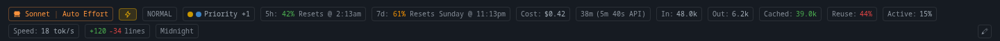
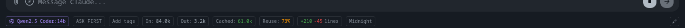
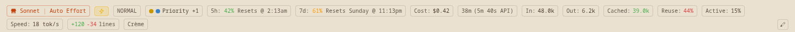
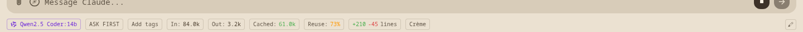
A Claude Code session fills two rows of chips; a local session only fills one — so the message box and the whole conversation above it shift about 25 pixels every time you switch between the two kinds of session.
→ Always reserve both rows' height, so nothing on screen moves when you switch sessions.


A local model has run 84,000 tokens of work here and the bar says nothing at all about money — there is no cost chip, just a gap between "Add tags" and "In: 84.0k".
→ Show a "Free" chip in local sessions so the absence of a bill is stated rather than implied.
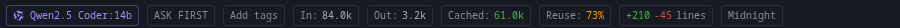
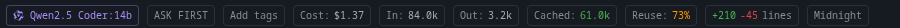
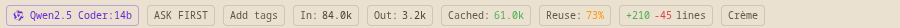
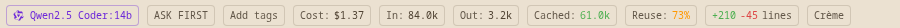
A free local model and a paid model whose price is not published produce a pixel-identical bar — I compared the two screenshots and the row is byte-for-byte the same. Both simply hide the cost chip.
→ When the model is metered but has no published price, show a dimmed "Cost: not listed" chip instead of hiding it.
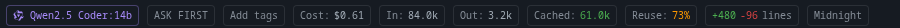
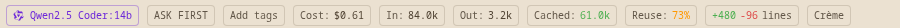
This session's own model is a free local one — the chip on the far left says so — yet the bar reads "Cost: $0.61". Every cent of that was spent by specialists it handed work to, and nothing on the chip says so.
→ Name the source on the chip itself, e.g. "Cost: $0.61 · specialists", instead of leaving it to the hover tooltip.
The line counter reads "+480 −96" here versus "+210 −45" in the same session without specialists — more than double, entirely because specialists edited files — but nothing on the bar mentions that three of them ran.
→ Add a "3 specialists" chip (off by default, switch it on from the Customize menu).
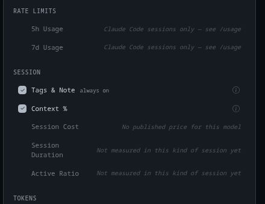
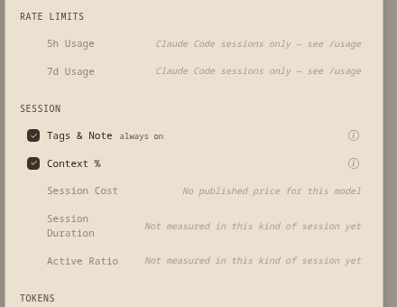
"Session Duration" is the only label long enough to wrap onto two lines, because its explanation sits beside it on the same row — so that one row is visibly taller than every other row in the list.
→ Put each explanation on its own line beneath the label, so every row is the same height.
Two rows say "Not measured in this kind of session yet." The word "yet" is a promise that this is coming.
→ Drop the promise — "Not available in this kind of session."
The rate-limit rows explain themselves as "Claude Code sessions only — see /usage". "/usage" is a typed command, and it is dead text here: you cannot click it.
→ Make it a real link that runs the command, or cut the pointer and just say "Claude Code sessions only".
In a session running a local model on your own machine, the cost row explains itself as "No published price for this model" — language that describes a shop listing, not a model running on your laptop.
→ Say why it is actually free: "Models on your own machine don't cost anything to run."
The status bar tells the truth about this session — 9 points before I build the backend — your answers
Today the bar shows the same chips no matter what is running the session, so a local model gets rate-limit chips it can never fill and prints a dash instead of a number. The change: a chip with nothing real to say is simply not drawn, the Customize menu explains why in plain words instead of hiding the row, and every number now counts the work your specialists did too. Everything here is the real screen running on fake data — nothing behind it is built yet, so this is the cheap moment to change it. Answer Yes to change it, No to leave it exactly as shown.
| Item | # | Point | Answer | Note |
|---|
Everything above is renderer-only work on fake data. The next four tasks are main-process work — reading the model price list, pricing each turn, and forwarding specialist usage to the parent session — and those are expensive to redo once built, which is why this is the stop.
There is one thing already fixed that you should know about rather than vote on: a cost under one cent was rendering as $0.00. It now reads <$0.01.